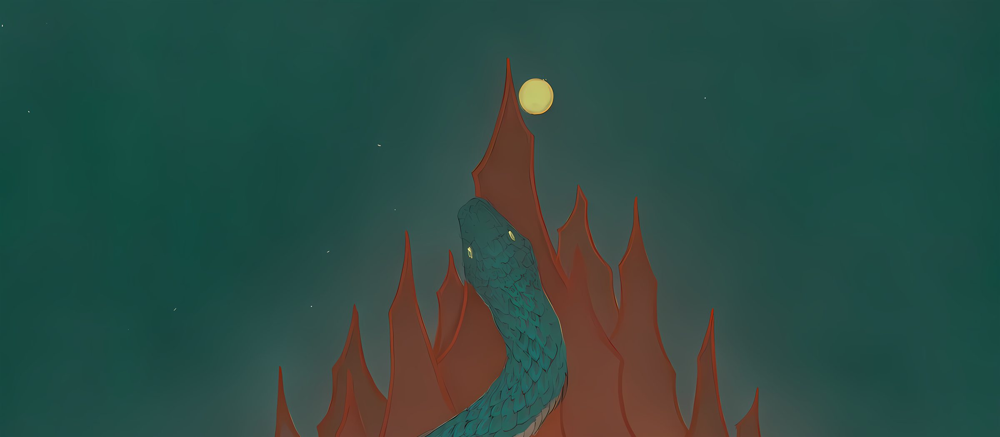

关于本站
Putus
天天天的博客。
为什么又做博客？
1.保持持续学习。
2.继续以前没有继续下去的事。
3.本地笔记库需要筛选。
唠叨
第一次搭博客是在2022年，那时候刚毕业，挺多东西都刚接触，买VPS、装Nginx、配PHP、建MySQL、上WordPress。上线那天挺高兴的，折腾来折腾去的终于落地交付。
后来死在三个地方：
1·VPS欠费当时给我一直发邮件催我缴费（由vultr赞助！）服务器没了站点被清空。
2·前端很烂，主题做的稀烂用的WordPress的主题，我既当站长又当前端，两边都不专业。
3·域名过期，RIP >http://cz.amethystcz.beauty/< 这个域名。
仓库
这次换成静态博客。没有框架，没有依赖：Markdown 放在 posts/，一个 Node 脚本把它们拼成 docs/，交给 GitHub Pages。
和笔记库没有关系。 笔记库是给自己看的，很杂，不对外；这里只放挑出来的。
写什么呢？
- 日课。临帖、刻章、英语、手账杂七杂八的爱好。
- 技术。踩过的坑，修好的东西，留个记录，省得下次再踩。还有每次做拓扑的记录，
以上是这么打算。
——先写写，再多看看改改。